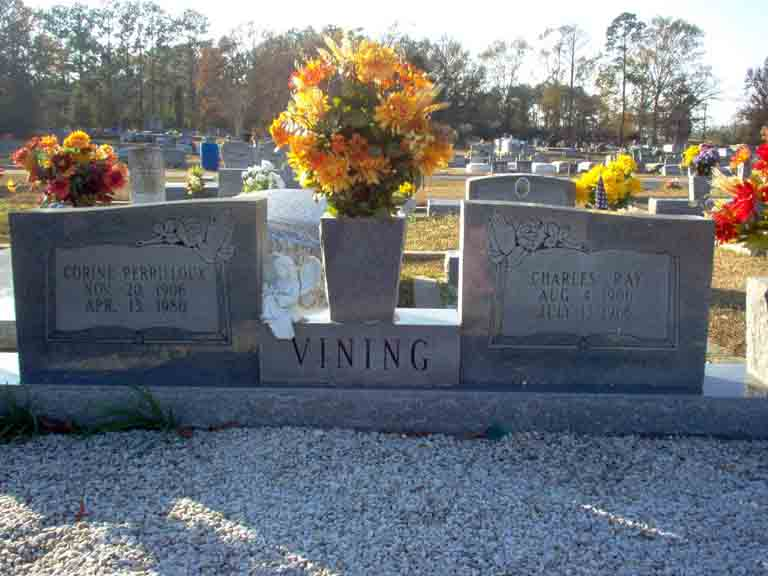
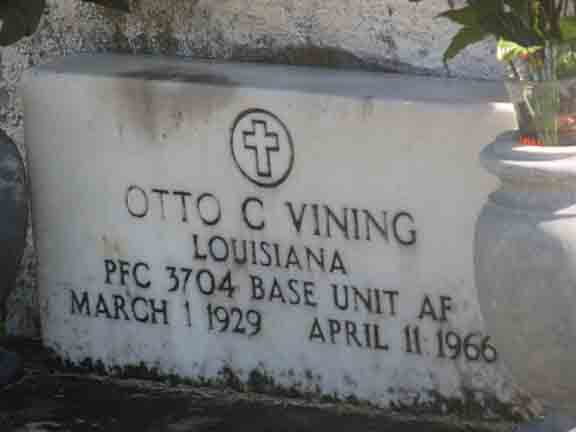
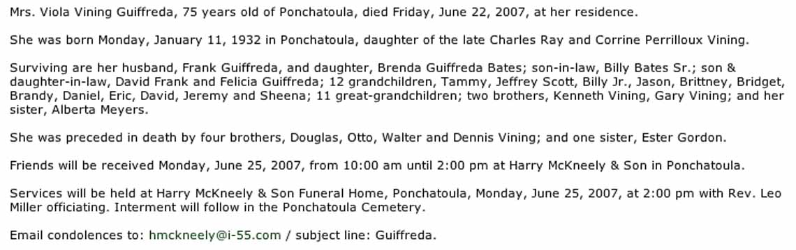

Census Data
| 1930 | 1940 | |
| Charles Ray Vining | ? | 33 |
| Corine (Perrilloux) Vining | ? | 33 |
| Douglas Herbert Vining | ? | 14 |
| Esther B. Vining | ? | 13 |
| Otto C. Vining | ? | 10 |
| Viola H. Vining | 8 | |
| Alberta H. Vining | 5 | |
| Walter Levi Vining | 2 | |
| Kenneth Ray Vining | ||
| Dennis M. Vining | ||
| Gary Vining |

Death Data
Gravestones for Charles Ray Vining and Corine (Perrilloux) Vining, in Ponchatoula Cemetery, Ponchatoula, Tangipahoa Parish, Louisiana (from Find A Grave):

